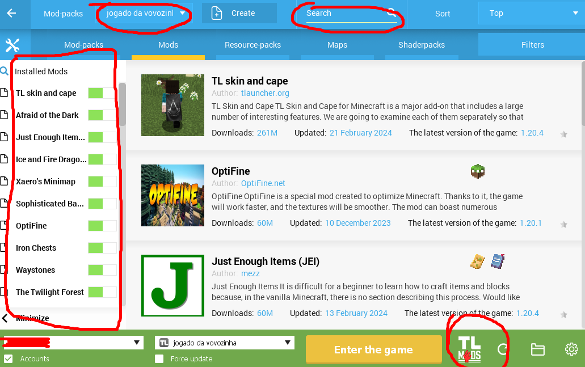

1- Vá ao link:TLauncher Download
2- Após a instalação, aperte Windows+R e digite na caixa "%appdata%" e pressione Enter;
3- Vá para ".../Roaming/.minecraft/versions" e extraia o zip do modpack desejado na pasta;
4- Agora, vá ao TLauncher e selecione a versão com o nome do modpack(estará perto da versão entre parenteses, logo na frente);
5- Caso queira jogar com estes mods, apenas entre no jogo, mas se quiser adicionar ou retirar mods, acesse o "TLMods", à direita das versões e selecione o modpack no canto superior esquerdo da janela para retirar ou instalar mods.
